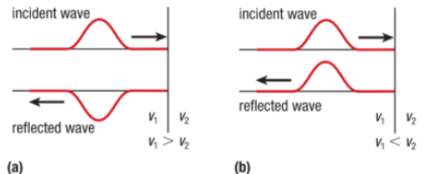
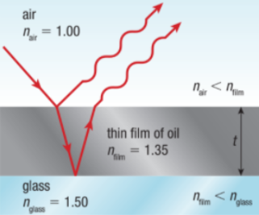
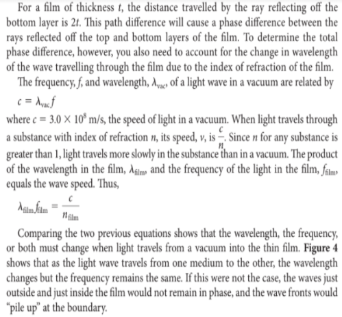
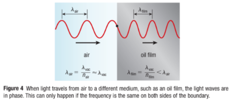
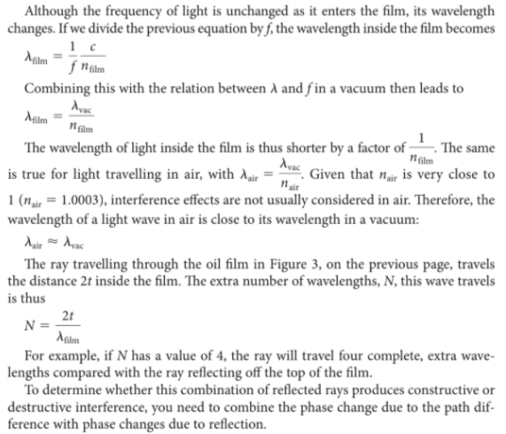
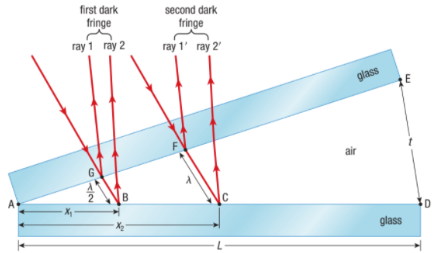

Interference in Thin Films
To understand why reflection from a layer of oil produces this colorful pattern, you need to understand the interference of light waves when they are reflected from or transmitted through a thin layer of material, often called a thin film.
Phase Change Due to Reflection
Light waves change phase by 180° when they reflect from the surface of a medium with a higher refractive index than that of the medium in which they are traveling. The phase changes that take place upon reflection play an important part in thin film interference.

A more optically dense medium has a higher index of refraction, so light waves are slowed down by the medium. As you can see in, when an incident wave reaches a fixed end or the boundary of a medium in which its speed will decrease, the reflected wave is inverted.

Callout
Wavelength and the Index of Refraction
The waves reflect from the top and bottom surfaces of the film of oil. Assume that the angle of incidence is zero. In the following figures, the incident ray is drawn with a larger angle of incidence so that the two reflected rays are easily visible.




Watch this video:
Air Wedges
To create a measurable pattern of destructive and constructive interference, researchers often use an air wedge, which is a wedge of air between two sheets of flat glass that have been angled to form a wedge.

Two flat layers of glass separated at one end form an air wedge.
Calculating Interference Effects in an Air Wedge
Practice
Use diagrams to explain why the top of a soap film appears bright from one side and dark from the other when light is transmitted through it.